ESCUELA DE MATEMÁTICA
II SEMESTRE DEL 2000
Tiempo: 2 Horas 15 Minutos
Puntaje Máximo 39 Puntos
TRABAJE DE FORMA CLARA Y ORDENADA. JUSTIFIQUE DEBIDAMENTE CADA RESPUESTA. USE BOL´IGRAFO, EN CASO DE TRABAJAR CON LÁPIZ, NO SE ACEPTAN APELACIONES.
- Se lanzan dos dados y se observa la variable aleatoria, la suma de los
resultados de los dos dados. Si los dados están cargados y los pares tienen
el doble de opción de salir que los impares, determine la probabilidad de:
- Que al lanzar los dos dados una vez la suma de las caras obtenidas sea
igual a cinco. (2)
- Obtener una suma de cinco entre los dos dados durante 4 veces si el
par de dados se lanzan durante 8 veces. (3)
- Obtener una suma de cinco entre los dos dados durante el tercer y
quinto lanzamiento si se lanzan 8 veces los dados. (2)
- Además determine la distribución de probabilidad de la variable aleatoria X,
el número de veces que hay que tirar dos dados cargados hasta
obtener alguno de los pares
(1, 1)(2, 2)(3, 3)(4, 4)(5, 5)(6, 6). (3)
Dada la forma en que los dados están cargados se tiene que:
P[1] = P[3] = P[5] = 1/9 y P[2] = P[4] = P[6] = 2/9
Así- P[X = 5] = P[{(1, 4)(4, 1)(3, 2)(2, 3)}] = 4** = 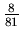
-
b(4 : 8, 8/81) =
 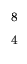
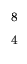
 8/81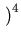1
- 8/81
8/81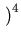1
- 8/81
- *
-
P[{(x, y)x = y} = P[{(1,
1),(2, 2),(3, 3),(4, 4),(5, 5),(6, 6)}] = 3*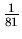
+ 3*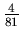
= 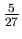.
Si X es la variable aleatoria que indica el número de intentos hasta obtener alguno de los pares, los posibles valores de X son 1, 2, 3,... y
P[X = k] = (1 - 5/27)k - 1*5/27
- Que al lanzar los dos dados una vez la suma de las caras obtenidas sea
igual a cinco. (2)
- Una empresa está organizando una actividad para el día de las madres a
la cual se asistirán 12 señoras.
- Si se toma en cuenta el orden en el cual se entregan las invitaciones,
¿de cuántas maneras se pueden entregar.? (1)
- Se van a repartir 18 rosas idénticas entre las madres. ¿ De cuántas
maneras se puede hacer la repartición de forma tal que la Señora López
reciba a lo sumo tres rosas, la Señora Vega reciba exactamente tres
rosas y todas las invitadas reciban al menos una rosa. (3)
- Se tienen 4 canastas iguales de productos de belleza, 5 perfumes
iguales y 3 regalos sorpresa iguales. Si se reparten en forma aleatoria,
un regalo por invitada, ¿de cuántas maneras quedan distribuidos estos
regalos (2)
- Si se toma en cuenta el orden en el cual se entregan las invitaciones,
¿de cuántas maneras se pueden entregar.? (1)
Solución
- Son las maneras de ordenar a las 12 señoras: 12!
- Se reservan 12 flores, una para cada una, y dos más para la señora
Vega. Entonces, dado que la señora López solo puede recibir cero, una
o dos más, las 4 restantes se distribuyen así:
Si la señora López no recibe más, serán 4 entre 10 señoras


Si la señora López recibe uno más, serán 3 entre 10 señoras

Si la señora López recibe dos más, serán 2 entre 10 señoras
 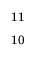
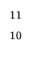
En total hay:
 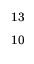
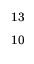 +
+  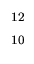
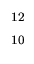 +
+ 

 maneras.
maneras.
- Se cuenta como si fuera a repartirse 12 regalos distintos y se
eliminan los conteos repetidos, o por selección.
 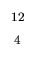
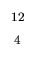
 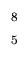
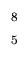
 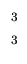
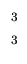 = 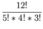
= 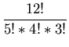
- Se disponen de 3 cajas con esferas de diferentes colores distribuidas de
la siguiente manera:
Considere el experimento que consiste en
CAJA 1 CAJA 2 CAJA 3 11 amarillas 10 rojas 8 verdes 4 rojas 4 blancas 3 blancas 2 blancas - Se selecciona una esfera de la caja 1, sin reposición.
- Si la esfera seleccionada es blanca, se extrae otra esfera de la caja
1 y se pasa a la caja 2.
- Si la esfera seleccionada es roja, se extraen otras 2 esferas de la caja 1 y se pasan a la caja 3.
Determine:
- La probabilidad de obtener una esfera roja. (3)
- Dado que se seleccionó una bola roja, determine la probabilidad de que se hayan transferido dos esferas desde la caja 1 a la caja tres. (3)
Solución
Se hace necesario el siguiente diagrama, en el paréntesis se pone la distribución de las esferas, en las cajas. Se distinguen los eventos PR: primera bola que se extrae es roja, PB: primera bola que se extrae es blanca y SR segunda bola que se extrae es roja.
-
P[SR] = 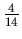*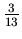*0
+ *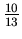*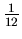
+ 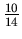*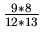*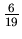
+**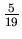 + *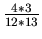*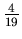 = 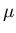 - P[PR SR] = 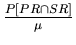 = 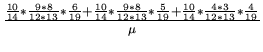
- Siete terminales de un sistema están conectadas por una línea de
comunicación a un centro de cómputo. En un tiempo específico, exactamente
cuatro de las siete terminales están listas para transmitir un mensaje.
Asuma que cada terminal tiene la misma probabilidad de ser consultada y tome
X, la variable aleatoria que indica el número de terminales que
deben ser consultadas hasta obtener una terminal lista para transmitir.
- Determine los posibles valores para X y la distribución de probabilidad para X. (3)
- Si en el problema si tienen m terminales de las cuales hay n listas, ¿cuál es la distribución de probabilidad para X, el número de terminales que deben ser consultadas hasta obtener una terminal lista para transmitir. ? (3)
Solución
- Los posibles valores de X son 1, 2, 3, 4 y
P[X = 1] = , P[X = 2] = *, P[X = 3] = **yP[X = 3] = ***
- Se generaliza del anterior, los posibles valores deX so
1, 2, 3,...m - n + 1 y para que X = k debe
ocurrir que en las k - 1 consultas iniciales se obtengan
terminales ocupadas y en la última una libre.
P[X = k] = 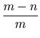*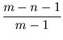...
 *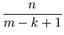
*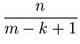
- Una tienda que vende suministros de cómputo vende dos tipos de discos
compactos, el normal y otro tipo llamado extra. El 70% de los clientes de la
tienda buscan el tipo extra.
- Entre 10 clientes seleccionados al azar, que desean comprar un disco,
¿cuál es la probabilidad de que por lo menos 5 busquen el tamaño
extra. (3)
- Si en la tienda hay en este momento 5 discos de cada tipo. >Cuál es la probabilidad de que los próximos 10 clientes que busquen un disco puedan comprar lo que desean?(2)
Solución
- Esto es el complemento de que 4 o menos soliciten el disco extra.
1 - B(4;10,.7)
- b(5;10,.7)
- Entre 10 clientes seleccionados al azar, que desean comprar un disco,
¿cuál es la probabilidad de que por lo menos 5 busquen el tamaño
extra. (3)
- De una población de 500 animales se capturan 200, se marcan y se sueltan
para que vuelvan a mezclarse con el resto de la población.
- Calcule la probabilidad de que en una muestra de 20 animales capturados o recapturados haya 4 o menos marcados. (3)
- Cuál es la probabilidad de que aparezcan 4 o más animales marcados en una captura o recaptura de 20. (3).
-
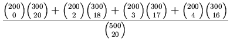
Solución
-
-
1 - 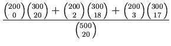